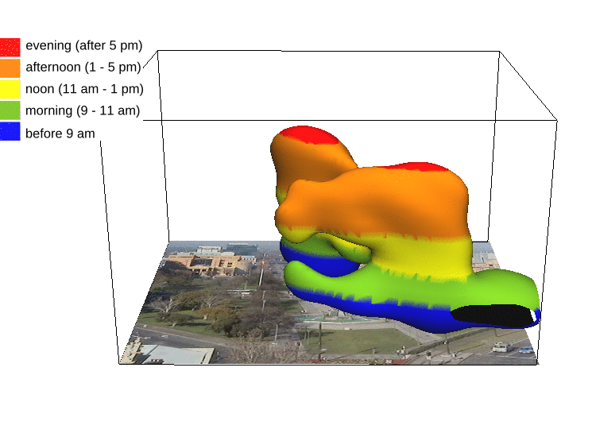

3D rasters are powerful
and you already know how to use them
Vaclav (Vashek) Petras
US-IALE, Baltimore
April 9-13, 2017
3D rasters (aka voxel models) have been used to represent and process
hyperspectral data,
describe forest and habitat properties,
analyze measured spatio-temporal data,
or explore simulation scenario space.
2D and 2.5D does not explicitly represent and model 3D relationships
in fully 3D systems such as forest ecosystems.
3D rasters on the other hand, preserve the original relationships in the 3D data.
The relationships in the third dimension may be different from the first two dimensions
which distinguishes 3D rasters from 2D rasters.
Other than that, 3D rasters are very similar to the commonly used 2D rasters
and there are tools available to process them including Python, R, or Octave.
Python
x = array([[[ 0, 1, 2],
[ 3, 4, 5],
[ 6, 7, 8]],
[[ 9, 10, 11],
[12, 13, 14],
[15, 16, 17]],
[[18, 19, 20],
[21, 22, 23],
[24, 25, 26]]])
x.sum(axis=0)
# array([[27, 30, 33],
# [36, 39, 42],
# [45, 48, 51]])

R
x = array(1:40, dim=c(2,4,5))
# , , 1
#
# [,1] [,2] [,3] [,4]
# [1,] 1 3 5 7
# [2,] 2 4 6 8
#
# , , 2
# ...
x[2,3,3]
# 22
x[2,3,3] = 0

Octave
x = reshape(1:8, 2, 2, 2)
a(2,1,1) = 5
b = 3 * a
# b =
#
# ans(:,:,1) =
#
# 3 9
# 15 12

GRASS GIS
We will demonstrate 3D raster algebra in GRASS GIS as an example of 3D raster processing
fully integrated into a general-purpose GIS and remote sensing tool.
-
data types:
- vectors
- 2D rasters
- 3D rasters
-
container types:
- imagery groups
- spatio-temporal datasets
- series of 2D rasters
(or vectors or 3D rasters)

Moving window
2D
r.neighbors input=a output=b method=average size=5
r.colors map=b color=viridis
3D
r3.neighbors input=a output=b method=average window=5,5,5
r3.colors map=b color=viridis
3D raster algebra
b = a + 2
b = if(a > 20, 1, null())
b = (a[0,0,-1] + a[0,0,1]) / 2
Example: Terrain evolution


Example: Vegetation structure
3D vegetation structure derived from lidar point clouds
Petras, V., D. J. Newcomb, and H. Mitasova.
Generalized 3D fragmentation index derived from lidar point clouds.
In: Open Geospatial Data, Software and Standards [in print]

3D index of 3D raster

Point cloud

Binning, moving window & raster algebra
# Bash
r3.in.lidar input=points.las n=count base_raster=ground -d class_filter=3,4,5
r3.neighbors input=count output=average method=average window=3,3,3
r3.mapcalc expression="buffer = if(average > 0, 1, 0)"


Fragmentation index
# Python
import grass.script as gs
gs.run_command("g.extension", extension="r3.forestfrag")
gs.run_command("r3.forestfrag", input="buffer", output="fragmentation")


Profile of 3D raster

Example: Behavioral patterns
spatio-temporal data representing behavioral patterns of people in urban environments

we will look not only at the processing but also at the visualization of 3D rasters.
Finally, we will show how to use
Python and
Bash scripting or
visual programming
to make the best use of 3D rasters.